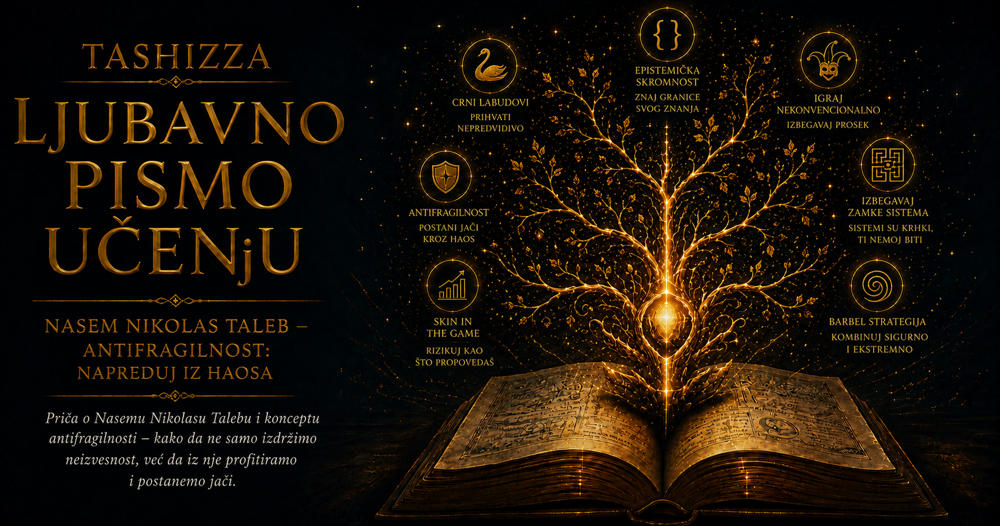

Ljubavno pismo učenju

Ljudi su dugo zamišljali budućnost kao produžetak uredno iscrtane linije. Prikupljali su podatke, računali proseke, prepoznavali pravilnosti i izrađivali modele koji su neizvesnost pretvarali u brojeve. Zahvaljujući takvom načinu mišljenja bilo je moguće planirati proizvodnju, procenjivati troškove, projektovati građevine, osiguravati imovinu i donositi odluke oslonjene na više od slutnje. Ipak, najveće istorijske promene često su stizale sa rubova poznatog sveta, iz događaja koje postojeći modeli jedva da su primećivali, a čije su posledice menjale ono što su ljudi smatrali mogućim.
Duga razdoblja stabilnosti lako stvaraju uverenje da će se poznati poredak nastaviti. Tržište godinama miruje, politički sistem izgleda postojano, uspešna kompanija deluje nedodirljivo, a pouzdana tehnologija prerasta u infrastrukturu od koje svi zavise. Zatim se dogodi finansijski slom, rat, epidemija, naučni prodor, tehnološki preokret ili nagli uspon ideje koju gotovo niko nije smatrao važnom. Posle takvog događaja pojavljuju se uredna objašnjenja: pronalaze se prethodni znaci, uzroci se slažu u uverljiv niz, a ishod počinje da izgleda gotovo neizbežno. Ta naknadna jasnoća prikriva činjenicu da pre preokreta većina posmatrača nije očekivala njegov oblik, trenutak ni razmere.
Iz raskoraka između osećanja da razumemo svet i stvarne sposobnosti da predvidimo njegove prelomne trenutke nastala je Talebova savremena ideja crnog labuda. Naziv potiče od nekadašnjeg evropskog uverenja da su svi labudovi beli, zasnovanog na velikom broju dotadašnjih opažanja. Susret Evropljana sa crnim labudovima u Australiji pokazao je koliko je zaključak bio krhak: hiljade belih primeraka mogle su ga podržavati, dok je jedan crni bio dovoljan da ga obori. Metafora je tako postala upozorenje da odsustvo poznatog primera ne predstavlja dokaz njegove nemogućnosti.
Crni labud u Talebovom značenju ima tri povezane osobine. Iz ugla dotadašnjeg iskustva nalazi se izvan uobičajenih očekivanja, proizvodi izuzetno velike posledice i posle svog nastanka dobija objašnjenje koje ga prikazuje predvidljivijim nego što je zaista bio. Retkost ga skriva od svakodnevnog iskustva, snaga posledica daje mu istorijsku težinu, a naknadno pripovedanje ublažava neprijatno priznanje da ga nismo prepoznali dok nam se približavao.
Ovaj pojam obuhvata i povoljne preokrete. Neočekivano naučno otkriće, iznenadan uspeh knjige, nastanak novog umetničkog pravca ili uspon male tehnološke kompanije mogu biti podjednako teško predvidljivi kao bankarski krah i raspad političkog poretka. Njihova zajednička osobina nalazi se u nesrazmeri između učestalosti i uticaja. Ogroman broj svakodnevnih događaja ostavlja malo traga, dok nekolicina izuzetaka preusmerava čitave oblasti ljudskog života.
Taleb je razliku između predvidljivih i izrazito nepredvidljivih oblasti približio zamišljenim svetovima Mediokristana i Ekstremistana. U Mediokristanu pojedinačna odstupanja imaju prirodne granice. Najviši čovek u velikoj grupi neće biti stotinu puta viši od prosečnog, niti će jedan učesnik svojom telesnom težinom nadmašiti zbir svih ostalih. Prosek u takvom svetu nosi mnogo korisnih informacija, jer jedan ekstreman primer ne može potpuno promeniti celinu.
U Ekstremistanu jedan slučaj može nadmašiti hiljade drugih. Najprodavanija knjiga može ostvariti veći prihod od čitave grupe prosečno uspešnih naslova, jedna digitalna platforma može okupiti više korisnika od bezbroj manjih konkurenata, a jedan berzanski dan poništiti dobit stvaranu godinama. U takvim oblastima raspodele imaju debele repove: ekstremni ishodi nose veliki deo ukupnih posledica i ne mogu se bezbedno odbaciti kao statističke nepravilnosti na udaljenom kraju grafikona.
Opasnost nastaje kada se o Ekstremistanu razmišlja alatima primerenim Mediokristanu. Proseci, standardna odstupanja i uredne zvonaste krive mogu proizvesti privid preciznosti, dok se presudan rizik skriva u događajima koje model snažno potcenjuje. Finansijski gubici, bogatstvo, popularnost digitalnih sadržaja, veličina gradova i žrtve ratova ne ponašaju se poput ljudske visine. Nekoliko još neviđenih ekstrema može iz temelja promeniti procenu zasnovanu na dugom nizu mirnih opažanja.
Taleb tu epistemološku zamku osvetljava pričom o ćurki koju čovek svakodnevno hrani. Svaki novi obrok učvršćuje njeno uverenje da je ljudska ruka izvor sigurnosti, pa poverenje dostiže vrhunac neposredno pre dana kada će čitav model njenog sveta biti uništen. Podaci koje je prikupila bili su stvarni, ali je njihovo značenje pogrešno protumačila. Mirna prošlost nije sadržala iskustvo događaja koji će prekinuti sam obrazac na kome je njena procena počivala.
Ovaj primer razotkriva granice induktivnog zaključivanja, odnosno oslanjanja na ponavljanje prethodnih obrazaca. Iskustvo ostaje nezamenljivo, ali njegova pouzdanost zavisi od prirode sistema koji posmatramo. Hiljade uspešnih tehničkih provera mogu pružiti snažne dokaze o pouzdanosti određene komponente, dok hiljade mirnih trgovačkih dana ne otkrivaju nužno razmere mogućeg finansijskog sloma. Podaci mogu govoriti samo o događajima koji su već ušli u njih, dok se najvažniji budući izuzetak po prirodi stvari još ne nalazi u tabeli.
Talebova misao zato pomera pažnju sa pitanja „Šta će se tačno dogoditi?” na mnogo odgovornije pitanje: „Šta će nam se dogoditi ako je naša procena pogrešna?” U svetu duboke neizvesnosti precizan datum naredne krize, buduća vrednost neke imovine ili tačan smer tehnološkog razvoja često ostaju izvan pouzdanog saznanja. Mnogo više možemo naučiti ispitujući da li jedan udar može uništiti čitav sistem, koliko taj sistem zavisi od jedne pretpostavke, gde se nalaze granice gubitka i koliko prostora postoji za oporavak.
Iz takvog razmišljanja izrastao je pojam antifragilnosti. Jezik je odavno razlikovao krhko, koje se pod pritiskom lomi, od robusnog, koje udar podnosi, i rezilijentnog, koje se posle poremećaja vraća u prethodno stanje. Taleb je želeo izraz za složeniju sposobnost: za sisteme koji od promenljivosti, razumno ograničenog stresa, grešaka i manjih poremećaja mogu steći novu snagu, znanje ili prilagodljivost. Takvu osobinu nazvao je antifragilnošću.
Mišići se razvijaju posle napora praćenog odmorom, imunski sistem oblikuje odgovor kroz susrete sa okruženjem, evolucija koristi varijacije i selekciju, a naučno znanje napreduje kada su tvrdnje izložene ozbiljnim pokušajima pobijanja. Preduzetničko okruženje može učiti iz brojnih malih eksperimenata ukoliko neuspeh jednog pokušaja ne ugrožava opstanak celine. U svim ovim primerima promenljivost pruža informaciju koju potpuno zaštićen sistem ne bi mogao da stekne.
Antifragilnost ima granice koje se u popularnim tumačenjima često gube. Organizam koji jača posle primerenog vežbanja može biti teško oštećen prekomernim opterećenjem, kao što preduzeće može učiti iz jeftinog promašaja, ali ne i iz greške koja odnese sav kapital. Korist od manjih promena postoji samo u rasponu u kome sistem zadržava sposobnost oporavka. Izvan tog raspona stres prestaje da bude podsticaj i postaje izvor trajne štete ili propasti.
Matematička osnova ove ideje nalazi se u nelinearnosti. U linearnom odnosu dvostruko veći uzrok proizvodi dvostruko veću posledicu, dok složeni sistemi često odgovaraju drugačije: mala količina opterećenja može imati zanemarljivo dejstvo, umerena podstaći prilagođavanje, a velika izazvati razaranje. Zbog toga prosek ponekad skriva više nego što otkriva. Dva sistema mogu biti izložena istoj prosečnoj količini stresa, a ipak doživeti potpuno različite ishode ukoliko se razlikuju veličina i raspored pojedinačnih udara.
Kada mogućnost dobitka raste brže od mogućnosti gubitka, izloženost ima povoljnu, konveksnu strukturu i promenljivost može donositi korist. Kada šteta raste brže od mogućeg dobitka, struktura je konkavna i krhka. Porcelanska šolja od jakog udara može samo izgubiti, dok mali istraživački projekat sa ograničenim troškom i mogućnošću velikog otkrića poseduje povoljnu asimetriju: mnogi pokušaji mogu ostati bez rezultata, a jedan uspeh nadoknaditi njihove troškove i otvoriti čitavo novo područje znanja.
Upravo ta asimetrija spaja crnog labuda sa antifragilnošću. Budući ekstremni događaj često ne možemo pouzdano imenovati, ali možemo oblikovati odnos prema njegovim posledicama. Moguće je ograničiti štetu, sačuvati rezerve, izbeći zavisnost od jednog oslonca i istovremeno ostaviti otvoren prostor za povoljan razvoj koji nismo umeli da predvidimo. Time se težnja ka savršenom proročanstvu zamenjuje pažljivim oblikovanjem izloženosti.
Dug, prevelika finansijska poluga i potpuno uklanjanje rezervi snažno povećavaju krhkost, jer fiksne obaveze ostaju i onda kada se prihodi i okolnosti iznenada promene. Porodica, kompanija ili država sa slobodnim kapacitetom može preživeti pogrešnu procenu i prilagoditi se novim uslovima. Sistem koji je svaki budući prihod unapred vezao za obaveze zavisi od sveta bez velikih odstupanja. Ono što u mirnom razdoblju izgleda kao besprekorna efikasnost može se pri prvom ozbiljnom poremećaju pokazati kao odsustvo prostora za grešku.
Zbog toga je antifragilnost vratila ugled redundansi, odnosno postojanju rezervnih delova, dodatnih kapaciteta i više nezavisnih puteva do istog cilja. U tehničkim sistemima ona se prepoznaje u rezervnim serverima, distribuiranim kopijama podataka, alternativnim komunikacionim vezama i mogućnosti izolovanja oštećene komponente. U lancima snabdevanja pojavljuje se kroz više dobavljača i lokalnu autonomiju, dok se u ličnom životu može graditi učenjem različitih veština, negovanjem više odnosa i čuvanjem vremena koje nije unapred potrošeno.
Sa istom idejom povezana je opcionalnost, sposobnost da se iskoristi povoljan ishod bez obaveze da se pretrpi neograničena šteta ukoliko se okolnosti razviju loše. Prototip, pilot-projekat, probni period i mala početna investicija omogućavaju da se nova informacija stekne po podnošljivoj ceni. Čovek tada ne mora unapred poznavati konačan odgovor, jer svakim reverzibilnim korakom uči dovoljno da izabere sledeći.
Taleb je sličnu raspodelu rizika opisivao slikom tega sa dva kraja. Na jednoj strani čuva se ono što je presudno za opstanak, dok se na drugoj ostavlja manji prostor za hrabre pokušaje čiji je gubitak ograničen, a moguća korist velika. Izbegava se prividno bezbedna sredina koja nudi česte skromne dobitke, ali skriva mogućnost konačnog sloma. Suština ove strategije nalazi se u razdvajanju onoga što smemo izložiti eksperimentu od onoga čiji bi gubitak ugrozio našu budućnost.
Finansijska kriza 2008. godine pokazala je koliko se velika krhkost može razviti ispod površine prividne stabilnosti. Visoka zaduženost, međusobna zavisnost institucija, složeni finansijski proizvodi i oslanjanje na slične pretpostavke pretvorili su lokalne gubitke u sistemski udar. Talebova misao bila je pogrešno sažimana tvrdnjom da je predvideo precizan tok krize. Njegova važnija poruka odnosila se na prepoznavanje strukture sposobne da se pod dovoljno velikim pritiskom raspadne, bez potrebe da unapred znamo tačan uzrok, trenutak i putanju sloma.
Popularnost izraza „crni labud” donela je i njegovo preterano širenje. Gotovo svaki neprijatan ili iznenađujući događaj počeo je da dobija tu oznaku, iako se iznenađenje određene institucije ne može poistovetiti sa dubokom nepredvidljivošću pojave. Mogućnost globalne pandemije, velikog kibernetičkog napada ili prekida složenih lanaca snabdevanja dugo je bila poznata stručnjacima, premda tačan trenutak i oblik takvih događaja nisu mogli biti pouzdano određeni. U tim slučajevima problem često leži u zanemarenoj ranjivosti, nedostatku pripreme i uverenju da će poznati rizik ostati udaljen.
Antifragilnost zahteva podjednako pažljivo tumačenje. Ona ne pretvara svaku nesreću u priliku, ne opravdava nepotrebno izlaganje bolesti, siromaštvu, nasilju ili povredi i ne obećava da će čovek posle svakog udara postati snažniji. Neke posledice ostaju nepopravljive, a neki sistemi pod pritiskom samo propadaju. Talebova korisna pouka nalazi se u ranijem oblikovanju uslova: u sprečavanju konačne propasti, ograničavanju pojedinačnih grešaka i stvaranju sposobnosti da se iz podnošljivih poremećaja izvuku informacije.
U učenju se ova misao može primeniti bez romantičnog veličanja neuspeha. Učenik koji se usuđuje da postavi hipotezu, napiše prvu verziju, proveri znanje i prihvati ispravku izlaže svoje razumevanje malom, korisnom pritisku. Greška mu pokazuje gde se njegova mentalna mapa razilazi sa stvarnošću, pod uslovom da nije kažnjen tako snažno da počne da je skriva. Obrazovanje postaje plodnije kada pruža prostor za ponovljene pokušaje, ozbiljnu povratnu informaciju i postepeno preuzimanje većih odgovornosti.
Talebova filozofija neizvesnosti pripada učenju upravo zato što od čoveka zahteva epistemološku skromnost. Količina podataka, složenost formule i samouverenost govornika ne mogu ukloniti granice saznanja. Učenost se pokazuje u sposobnosti da razlikujemo ono što znamo od onoga što pretpostavljamo, da prepoznamo posledice sopstvene greške i da zaštitimo ono što se posle propasti ne može obnoviti.
Prihvatiti neizvesnost zato ne znači odustati od mišljenja, planiranja i delovanja. To znači osloboditi se nemogućeg zadatka da budućnost potpuno podredimo svom modelu. Možemo graditi rezerve, negovati više oslonaca, birati male i reverzibilne korake, ulagati u znanje i ostavljati prostor povoljnoj slučajnosti. Nijedna od tih odluka ne otkriva unapred šta će doći, ali zajedno stvaraju život i institucije koje budućnost teže lomi.
Crni labud ruši predstavu da se sigurnost povećava sa svakim novim danom u kome se ništa veliko nije dogodilo, dok antifragilnost otvara zreliji odnos prema nepoznatom. Između naivne vere u prognozu i paralizujućeg straha nalazi se prostor odgovorne hrabrosti: dovoljno opreza da ne rizikujemo ono što ne možemo vratiti i dovoljno radoznalosti da kroz male pokušaje otkrivamo ono što još ne znamo. Upravo u tom prostoru učenje postaje najbolja priprema za svet koji nikada neće imati obavezu da liči na naše pretpostavke.